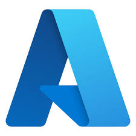
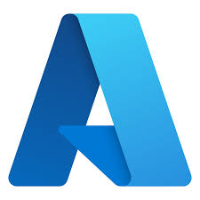

Skills
Programming Languages


IDE / Platforms


Visualization

Libraries & Frameworks

Statistical Analysis
Database & Big Data Management
Git Version Control
Cloud Platform
 

Machine Learning
Supervised Machine Learning
Regression
Linear Regression (LR)
Support Vector Regression (SVR)
Decision Tree Regression (DTR)
Classification
Logistic Regression
Support Vector Machine (SVM)
Decision Tree (DT)
Bagging Classifier (Random Forest)
Boosting Classifier (XGBoost, AdaBoost)
K-Nearest Neighbors (KNN)
Naive Bayes Classifier
Unsupervised Machine Learning
K-Means Clustering
Deep Learning & NLP
Deep Learning
Artificial Neural Networks (ANN)
Feedforward Neural Networks
Multilayer Perceptron (MLP)
Convolutional Neural Networks (CNN)
Image Classification
Object Detection
Feature Extraction
Time Series Forecasting
Recurrent Neural Networks (RNN)
Long Short-Term Memory (LSTM)
Natural Language Processing (NLP)
Sentiment Analysis
Text Preprocessing (Tokenization, Lemmatization)
Text Classification
Language Modeling (Transformers/BERT)